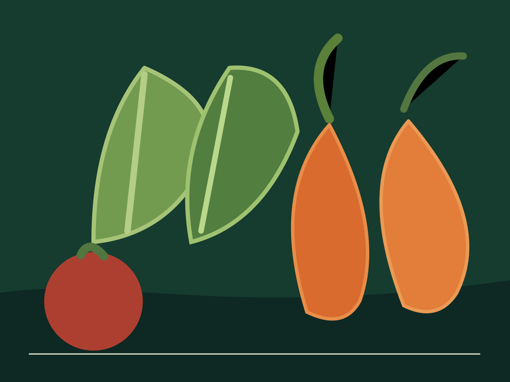

Productos de frutas y verduras para cotizar al por mayor.
Si compras para una empresa en Lima, organiza tu lista de frutas y verduras. Indica productos, cantidades y frecuencia para que podamos evaluar una cotización.
Importante: los nombres son ejemplos de consulta. Variedades, presentaciones y disponibilidad se confirman individualmente; no mostramos inventario en tiempo real.

Explora por familia.
Una misma solicitud puede combinar distintas frutas, verduras, raíces y hierbas. Los grupos organizan consultas, no stock.
Frutas
Ejemplos para consultar: limón, palta, plátano, mango, fresa, naranja, mandarina y papaya. Señala variedad y maduración cuando importe para tu uso.
Ver frutas al por mayor ↗Verduras y hortalizas
Ejemplos para consultar: tomate, cebolla, lechuga, zanahoria, pimiento y zapallo. Describe variedad y uso cuando sea relevante.
Ver verduras al por mayor ↗
Raíces y complementos
Puedes consultar por papa, camote, yuca, ají amarillo o hierbas aromáticas. La unidad y presentación se confirman durante la evaluación comercial.
Cotizar mi lista ↗Productos que puedes incluir en tu lista.
Selección orientativa para formular solicitudes; no representa existencias disponibles ni precios.
Qué detalles ayudan a revisar tu lista.
Una solicitud concreta reduce preguntas posteriores.
Nombre y variedad.
Especifica características importantes para la cocina.
Cantidad y unidad.
Incluye kilos, cajas o unidad como referencia, sin asumir presentación.
Frecuencia y zona.
Comparte compra puntual o recurrente y distritos para evaluar atención.
¿Varios locales?
Indica cuántos locales deseas considerar; factibilidad sujeta a revisión.
Una misma cotización para tu lista.
No necesitas consultar cada producto por separado: describe la combinación de frutas y verduras que necesita tu operación.
Preparar solicitud mayorista ↗Antes de enviar tu lista.
No. Son ejemplos de consulta; se confirma disponibilidad comercialmente.
Sí. Describe cualquier fruta o verdura que necesite tu empresa para evaluar tu solicitud.
No. Puedes enviar una lista combinada en una sola solicitud.